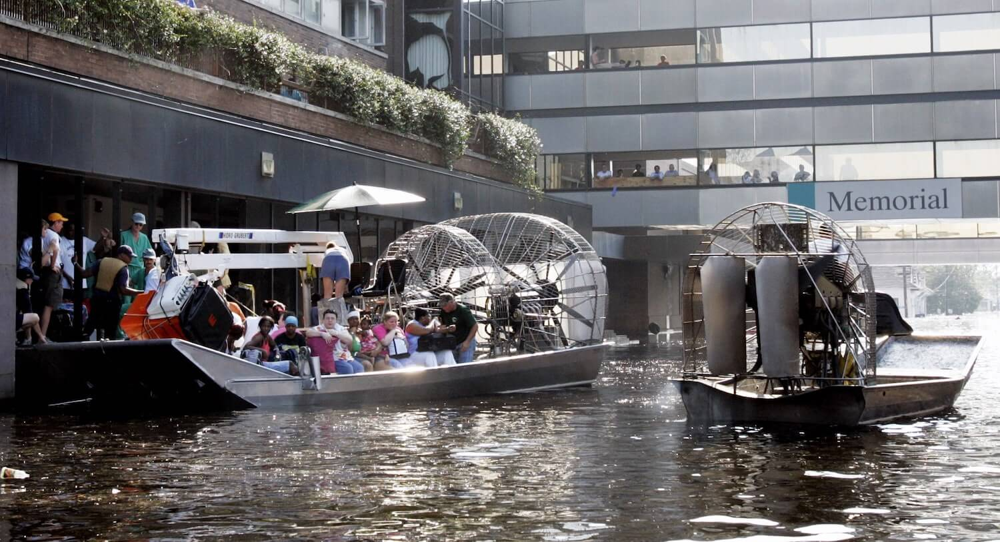

Places around the world are being affected by climate change through
devastating floods, wildfires and extreme heat-waves. Many healthcare
facilities are simply not prepared and there is therefore a pressing
need to address this through awareness of climate resilience.
Climate change has impacted the prevalence of infectious diseases,
such as dengue, malaria and zika virus, which has sparked a rise in
cases during periods of increasing temperatures and rainfall. The
effect of climate change and diseases has been taking its toll on
healthcare facilities’ ability to deliver safe and reliable services.
Professor Guy Howard is the Global Research Chair in Infrastructure
and Environmental Resilience and Associate Director (International) of
the Cabot Institute of the Environment at the University of Bristol.
Addressing the concerning threat of the lack of resilience within
healthcare services and the challenges ahead, he highlighted four key
components of healthcare facilities: the health workforce; water,
sanitation and healthcare waste management; energy; and infrastructure,
technology and products.
The resilience of each element is crucial in the process of
administering aid to those who come into hospitals and other healthcare
facilities. An individual admitted to hospital without access to
toilets and clean water to wash their hands will have their health
compromised through coming into contact with an unsafe health service.
Add more problems such as a tired workforce and unreliable
power-generating system and an unforeseen climate event may collapse
the whole service.
Professor Howard goes on to explain why having climate-resilient and
safe health services is so important. First, in ideal conditions,
very few services in the world have all four mentioned components to
secure a safe and resilient environment for patients. Additionally,
around 900 million people in the world use facilities with no access
to clean water, the equivalent to 4% of hospitals.
There is a major challenge for those services which are already
lacking basic resources such as water, sanitation and thermoregulation
(cooling systems or heating) – the latter has become increasingly
significant since many buildings that are designed for cold weather
cannot withstand the extreme temperatures seen recently due to global
warming.
Additionally, there are many climate threats, including wildfires,
droughts, and floods, which will physically impact healthcare
facilities around the world.
Wildfires are the biggest threat to healthcare facilities in Australia and the USA.
Resilience in healthcare matters
The concept of resilience goes hand in hand with sustainability,
because resilient services and infrastructure can cope with ‘stresses’
and ‘shocks’ that may put many hospitals out of service and bring harm
to the most vulnerable people.
Professor Howard explains that resilience is about response -
authorities are much quicker to address shocks to services which are
perceived as dramatic or imminent. For example, devastating floods
alarm the authorities and the public, and because they often lead to
disasters, such as power outages and bridge collapses, everyone is
forced to act quickly. Unfortunately, at this stage it is too late to
take any significant preventative measures and many lives are sadly lost.
Doctors and healthcare workers were not prepared for the events that
took place at Memorial Medical Centre, New Orleans on 29 August 2005.
Hurricane Katrina flooded the hospital, there was no electricity, no
food or water. Temperatures rose to 43°C for several days which ended
in the most vulnerable patients being euthanized due to lack of
preparedness and understanding of how to respond to this type of
disaster | Bill Haber / AP file.
On the other hand, responding to stresses does not necessarily make
the authorities aware of the problem. An example of this is when there
may be a temporary heatwave, in which services are put under stress,
but not enough to evoke much-needed changes to infrastructure so as to
avoid a power failure, for example. In these cases, Professor Howard
marks the importance of efficient thermoregulated buildings and
contingency plans for power outages.
In summary, it is easier to respond to shocks than to stresses,
however with stress, people are less likely to wake up to the problem
due to its long-term nature. By changing our focus to address stresses,
we can ensure that we create resilient and strong services, which are
better prepared for the shocks.
Both shocks and stresses impact the healthcare system by adding strain
to workers who are already over-worked and to the infrastructure, by
damaging life-saving equipment, lifts to safely transfer patients and
by cutting off water and sanitation.
In June 2021, an unprecedented heat wave put an immense strain on US
and Canadian services. A measure of preparedness for the disaster was
observed through the set-up of cooling centres across the affected
regions. These centres sheltered citizens from the heat, and may be a
useful strategy in preparing for future heat waves in places not
accustomed to such high temperatures.
Hospital patients struggle to cope with intense heat waves as
buildings are not designed with appropriate cooling systems (left).
In 2021, citizens seek refuge from extreme temperatures in cooling
centres. Such measures may help healthcare facilities being overrun
with people affected by heat stroke (right) | Martin Bureau / AFP / Getty Images.
Tackling a lack of resilience within healthcare facilities
Facilities may wish to reinforce their current basic services such as
ensuring a clean water supply, optimizing food and sanitation and
preparing their workforce through relevant training and communication.
The WHO Operational Framework currently offers recommendations into
these preparedness solutions and additional information on how to get
support to tackle a lack of resilience. Unfortunately, however, many
communities around the world do not have the resources to achieve such
improvements.

Cambodian citizens volunteer to help during a seasonal flood | Ny Menghor / Unsplash
Low-income and rural communities are the most at risk due to a lack of
basic coverage of healthcare services. The UN and the 17 Sustainable
Development Goals (SDGs) agree that adopting climate resilient
healthcare facilities is part of the same strategy to end poverty and
reduce inequalities. By aiming to execute the SDGs, there may be hope
to relieve some suffering on less-developed populations regarding the
vulnerability of their healthcare facilities to climate change.
Professor Howard and colleagues acknowledge that the lack of basic
coverage needs to be tackled, and help address proposals by the WHO
guidelines for climate resilience. For example, in areas affected by
drought, hospitals may look to adapt to collect rainwater during the
rainy season through the use of certain water towers (image below). In
reality, however, these recommendations are not universally suitable,
as raised towers may not be appropriate for certain local climates,
and could easily collapse during a hurricane due to its structural
design. More climate (and regional) appropriate measures should be
carefully explored to protect low-income and rural communities in the
event of future natural disasters.
A climate resilience recommendation by the WHO for maintaining water
supply to healthcare facilities should consider local weather such
as a history of hurricanes and typhoons. The image shows how a
raised water tower which may be vulnerable to strong winds and not
climate-resilient | Professor Guy Howard / University of Bristol
Environmental sustainable healthcare facilities
Climate resilience and preparedness are both environmentally
sustainable measures. Ensuring services run with clean water and
sanitation may also contribute to a healthy environment through the
reduction of pollutants. This may also be true as services deprived of
water and sanitation often become the sources of infectious diseases.
Additionally, running safe services benefit all people, especially the
most vulnerable patients, as well as allowing the workforce to
withstand future emergencies.
5% of [greenhouse gas] emissions in England come from the NHS.
Climate resilience emphasises the importance of preparedness and
awareness towards climate change and its effects on worldwide
healthcare facilities. The lack of resilient healthcare facility
measures may become a source of stress and cause healthcare workers to
be unprepared to tackle shocks, such as a flood or drought. On the
other hand, it may be also important to recognise that in richer
countries, implementing climate resilience means to lower the release
of contaminants into the air and environment, which will reduce the
risk of diseases through better waste management. To conclude, without
resilient healthcare services and facilities, the health and well-being
of the world’s population is undoubtedly at risk, particularly when
facing the consequences of climate change.
‘If you have healthy people, then you have a healthy environment. By
achieving this, then we can promote environmental sustainability’.
Featured Image: Magdiel Lago / Ian Anderson / Fas Khan | Unsplash
Corvalan, C., Villalobos Prats, E., Sena, A., Campbell-Lendrum, D., Karliner, J., Riso, A., Wilburn, S., Slotterback, S., Rathi, M., Stringer, R., Berry, P., Edwards, S., Enright, P., Hayter, A., Howard, G., Lapitan, J., Montgomery, M.,
Prüss-Ustün, A., Varangu, L., & Vinci, S. (2020). Towards climate resilient and environmentally sustainable health care facilities.
International Journal of Environmental Research and Public Health. 17(23). https://doi.org/10.3390/ijerph17238849, https://doi.org/10.3390/ijerph17238849